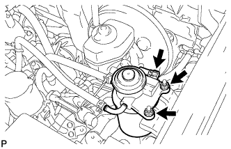
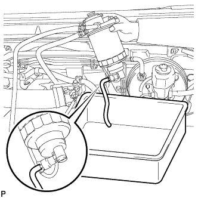

ТОПЛИВНАЯ СИСТЕМА ДВИГАТЕЛЯ > ПРОВЕРКА БЕЗ СНЯТИЯ С АВТОМОБИЛЯ |
| 1. CHECK FOR FUEL LEAK |
Check that there are no fuel leaks anywhere in the fuel system after performing maintenance.
| 2. CHECK FUEL FILTER WARNING LIGHT AND DRAIN WATER |
Check the fuel filter multi-information display.
|  |
Disconnect the level warning switch connector.
Remove the 2 nuts and lift up the fuel filter.
|  |
Connect a hose to the fuel filter drain plug. Place the other end of the hose into a container under the fuel filter drain plug.
Loosen the fuel filter drain plug to drain water.
Tighten the fuel filter drain plug by hand.
Install the fuel filter with the 2 nuts.
Connect the level warning switch connector.